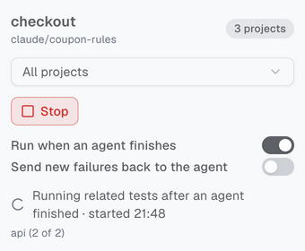
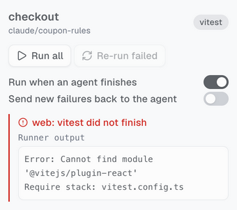

빠른 시작
-
설치
Orca에서 설정 → Plugins를 열고 Test Runner를 검색해 설치한 뒤 권한을 승인해요.
-
패널 열기
워크스페이스를 열고 오른쪽 사이드바의 Test Runner 탭을 열어요. 모두 실행으로 동작을 확인해요.
-
에이전트에게 일 시키기
에이전트가 작업을 끝내면 관련 테스트가 돌아요. 실패하면 에이전트에게 맡기기를 눌러요.
터미널에서 설치할 수도 있어요.
orca plugin install h00ns/test-runner-for-orca패널 사용법
| 버튼 | 하는 일 |
|---|---|
| 모두 실행 | 워크스페이스(또는 위에서 고른 프로젝트)의 테스트를 모두 실행해요. |
| 실패만 다시 | 지난번에 실패한 테스트 파일만 다시 실행해요. |
| 중지 | 실행 중인 테스트를 멈춰요. Playwright 웹 서버처럼 테스트가 띄운 것도 함께 꺼요. |
| 모든 프로젝트 ⌄ | 모노레포일 때 보여요. 패키지 하나만 골라 실행할 수 있어요. |
| 에이전트가 끝나면 실행 | 자동 실행을 켜고 꺼요. |
| 새 실패를 에이전트에게 다시 보내기 | 자동 수정 루프를 켜고 꺼요. |
| 에이전트에게 맡기기 | 실패 하나를 워크스페이스의 에이전트에게 보내요. |
| 새 실패만 에이전트에게 전부 맡기기 | 새 실패만, 또는 모든 실패를 보내요. |
| 파일 열기 | 실패한 테스트 파일을 에디터 탭으로 열어요. |
실패마다 테스트 이름, 파일과 라인, 에러 메시지를 보여줘요. 러너 내부의 스택은 잘라내요. 눈여겨볼 실패는 배지로 표시해요.
| 2개 실패 | 지금 실패하는 테스트예요. |
| 새 실패 | 직전 실행에서는 통과했어요. 마지막 변경이 깨뜨렸을 가능성이 커요. |
| 불안정 | 실패했다가 다시 실행하니 통과했어요. 변경 탓이 아닐 가능성이 크고, 에이전트에게 보내지 않아요. |
| 서버 꺼짐 | 서버나 DB에 연결하지 못했어요(connection refused). 앱을 먼저 실행하세요(예: pnpm dev). 에이전트에게 보내지 않아요. |
| 41개 통과 | 통과한 테스트예요. |
결과는 Orca 상태바에도 2개 실패처럼 보여요. 누르면 테스트를 실행해요.
에이전트와 함께 쓰기
에이전트가 끝나면
- 코드가 마지막 실행 때와 같으면 아무것도 실행하지 않아요. 질문에 답만 한 턴은 비용이 들지 않아요.
- 바뀌었다면 마지막 실행 이후 바뀐 파일로 테스트를 골라요. Vitest와 Jest는 그 파일을 import하는 테스트만, 다른 러너는 자기 폴더가 바뀌었을 때 전체를 실행해요. 브라우저 테스트(Playwright, Cypress)는 설정에서 켜지 않으면 빠져요.
- 실패한 테스트는 한 번 더 돌려 불안정한 것을 가려내고, 직전 실행과 비교해 새 실패를 표시해요.
- 테스트가 실패하기 시작하거나 다시 통과하면 알림으로 알려줘요.
워크스페이스의 첫 자동 실행은 비교할 이전 실행이 없어서 전체를 실행해요. 파일이 삭제되거나 이름이 바뀐 경우, git이 아닌 폴더도 마찬가지예요. 일부만 실행하면 나머지는 이전 결과를 유지하고, 패널에 테스트 12개 실행, 나머지는 이전 결과 유지처럼 표시돼요.
실패 보내기
에이전트에게 맡기기를 누르면 워크스페이스의 에이전트에게 실패를 한 줄로 입력해요. 재현 명령도 같이 들어가요.
The test "cart › applies the coupon once" in apps/web/src/cart.test.ts:42 is failing. Error: AssertionError: expected 8000 to be 9000 … Reproduce with: cd apps/web && npx vitest run src/cart.test.ts -t "applies the coupon once" Fix the code (or the test, if the test itself is wrong) and re-run it until it passes.- 쉬고 있는(작업을 끝냈거나 입력을 기다리는) 에이전트에게 보내요.
- 작업 중이거나 권한 승인을 기다리는 에이전트에게는 절대 입력하지 않고, 에이전트가 작업 중이라고 알려줘요.
- 열린 에이전트가 없으면 설정에서 고른 에이전트(기본 Claude Code)를 띄우고, 준비될 때까지 기다린 뒤 실패를 입력해요.
자동 수정 루프
기본으로 꺼져 있어요. 새 실패를 에이전트에게 다시 보내기를 켜면, 자동 실행마다 에이전트가 만든 실패를 방금 작업을 끝낸 그 에이전트에게 돌려보내요. 에이전트가 고치고 끝내면 테스트가 다시 돌아요. 3회(변경 가능)가 지나면 멈추고 알려줘요.
작업을 끝낸 그 에이전트에게만 보내고, 사용자가 중단한 턴은 건너뛰고, 에이전트를 스스로 띄우지 않아요. 에이전트가 시작하기 전부터 있던 실패는 건드리지 않아요.
테스트를 실행하는 방법
Test Runner는 npm test 스크립트를 실행하지 않아요. 결과를 읽는 데 필요한 옵션을 붙여서 테스트 러너를 직접 실행해요.
| 러너 | 실행하는 명령 |
|---|---|
| Vitest | node node_modules/vitest/vitest.mjs run --reporter=json --outputFile=… --passWithNoTests --coverage.enabled=false |
| Jest | node node_modules/jest/bin/jest.js --json --outputFile=… --ci --passWithNoTests --forceExit --coverage=false |
| Playwright | node node_modules/@playwright/test/cli.js test --reporter=junit --pass-with-no-tests |
| Cypress | node node_modules/cypress/bin/cypress run --reporter junit |
| Gradle | ./gradlew test --continue --console=plain (없으면 gradle) |
| Maven | ./mvnw test -fae -B (없으면 mvn) |
| pytest | .venv/bin/python -m pytest --junitxml=… -o junit_family=xunit1 -q (없으면 python3) |
스크립트를 쓰지 않는 이유는 이래요.
- 리포트를 읽어야 해요. 실패를 JSON이나 JUnit XML 리포트로 받아야 파일, 라인, 에러를 정확히 보여줄 수 있어요. 스크립트의 콘솔 출력은 형식이 제각각이라 믿고 읽을 수 없어요.
- 일부만 실행해야 해요. 관련 테스트(
vitest related …,jest --findRelatedTests …)나 실패한 파일만 돌리려면 인자를 직접 넘겨야 해요. - 반드시 끝나야 해요. watch 모드 스크립트는 끝나지 않아요.
- 패키지 매니저와 무관해요. npm, pnpm, yarn 모두 똑같이 동작해요.
test 스크립트는 그 패키지가 어떤 러너를 쓰는지 알아낼 때만 봐요.
"test": "vitest run --config vitest.unit.config.ts"처럼요. 이 옵션은 자동으로 반영되지 않아요. .orca-test-runner.json의 args로 옮기거나, 에이전트에게 맡기세요.
러너는 사용자의 node(PATH, Homebrew, Volta, mise, asdf)로 색상을 끄고 실행해요. 커버리지는 꺼서, 일부만 실행할 때 커버리지 기준 때문에 실패하지 않아요. CI는 설정하지 않아서, reuseExistingServer: !process.env.CI를 쓰는 Playwright 설정도 이미 떠 있는 개발 서버를 그대로 써요.
지원하는 러너
| 러너 | 찾는 기준 | 에이전트가 끝나면 | 실패만 다시 |
|---|---|---|---|
| Vitest | package.json의 vitest, vitest.config.* | 관련 테스트 | 그 파일만 |
| Jest | package.json의 jest, jest.config.* | 관련 테스트 | 그 파일만 |
| Playwright | @playwright/test, playwright.config.* | 기본으로 꺼짐 | 그 파일만 |
| Cypress | cypress, cypress.config.* | 기본으로 꺼짐 | 그 파일만 |
| Gradle | build.gradle(.kts), settings.gradle(.kts) | 전체 | 전체 |
| Maven | pom.xml | 전체 | 전체 |
| pytest | pytest.ini, pyproject.toml의 [tool.pytest…], conftest.py | 전체 | 그 파일만 |
러너는 설치돼 있어야 해요. node_modules, Gradle·Maven wrapper, 가상환경(virtualenv) 중 하나에 있어야 해요.
모노레포. pnpm-workspace.yaml이나 package.json의 workspaces를 읽어서 패키지와 러너마다 프로젝트를 하나씩 만들어요. 루트가 패키지들을 위해 러너를 설치만 해둔 경우 루트 자체는 실행하지 않아요. 루트 설정이 패키지를 직접 나열하면(Vitest workspace나 projects, Jest projects) 루트가 패키지들을 대신 실행해요.
설정 파일
워크스페이스 루트의 .orca-test-runner.json은 Test Runner가 무엇을 실행할지 정확히 알려줘요. 자동 감지로 부족할 때만 필요해요. test 스크립트에 옵션이 있거나, 구조가 특이하거나, 환경 변수가 필요하거나, 브라우저 테스트도 에이전트 작업 후 돌리고 싶은 경우예요. 커밋해두면 팀이 같은 설정을 써요.
{
"$schema": "https://raw.githubusercontent.com/h00ns/test-runner-for-orca/main/schema/orca-test-runner.schema.json",
"projects": [
{ "name": "web", "root": "apps/web", "runner": "vitest", "args": ["--config", "vitest.unit.config.ts"] },
{ "name": "api", "root": "services/api", "runner": "gradle" },
{ "name": "e2e", "root": "apps/web", "runner": "playwright", "autoRun": false }
]
}| 키 | 의미 |
|---|---|
projects | 자동 감지 대신 실행할 프로젝트 목록이에요. 항목마다 root(워크스페이스 루트 기준 폴더, 기본값은 루트), runner(비우면 자동 감지), name, args(실행 명령에 덧붙일 인자), env, autoRun(에이전트가 끝나면 실행할지, 기본 true, 브라우저 테스트는 false)을 적어요. |
ignore | projects가 없을 때 감지에서 뺄 폴더예요. |
autoRunScope | related 또는 all. 이 워크스페이스에서 에이전트가 끝난 뒤 실행할 범위예요. |
env | 모든 프로젝트에 넘길 환경 변수예요. 에이전트가 받는 재현 명령에도 그대로 들어가요. |
args에 리포터, 출력 파일, watch, 커버리지 옵션은 넣지 마세요. Test Runner가 직접 붙여요. 파일에 실수가 있으면 패널이 어디가 무엇이 잘못됐는지 알려줘요.
에이전트에게 맡기기
워크스페이스의 에이전트에게 아래 프롬프트를 붙여넣으세요. 에이전트가 파일을 만들고 스위트마다 실제로 실행되는지 확인해요. 패널은 다음에 열 때 새 파일을 읽어요.
이 레포에 Test Runner for Orca 설정을 해줘. 레포 루트에 .orca-test-runner.json을 만들어.
1. 테스트 스위트를 모두 찾아줘: Vitest, Jest, Playwright, Cypress, Gradle, Maven, pytest. 모든 package.json(워크스페이스 패키지 포함)과 test 스크립트, 러너 설정 파일, build.gradle(.kts), pom.xml, pyproject.toml을 확인해.
2. 스위트마다 "projects"에 항목을 하나씩 넣어: "name", "root"(레포 루트 기준 폴더, 루트면 생략), "runner"(vitest, jest, playwright, cypress, gradle, maven, pytest 중 하나).
3. "args"는 설정 파일 지정처럼 꼭 필요할 때만, test 스크립트가 실행하는 방식 그대로 넣어. 리포터, 출력 파일, watch, 커버리지 옵션은 넣지 마. Test Runner가 직접 붙여. "env"는 테스트에 필요한 변수만 넣어.
4. 느린 스위트는 "autoRun": false로 해줘: 브라우저 테스트(Playwright, Cypress)와 서버나 DB가 떠 있어야 하는 테스트.
5. 파일 맨 앞에 "$schema": "https://raw.githubusercontent.com/h00ns/test-runner-for-orca/main/schema/orca-test-runner.schema.json"을 넣고, 주석 없는 올바른 JSON으로 만들어.
6. 스위트마다 그 러너와 args로 한 번씩 실행해서 동작하는지 확인해. 끝나면 무엇을 설정했는지, 뺀 게 있으면 왜 뺐는지 알려줘.설정
설정 → Plugins → Test Runner (설정 화면의 항목 이름은 영어로 보여요)
| 설정 | 기본값 |
|---|---|
| 에이전트가 끝나면 테스트 실행 | 켜짐 |
| 에이전트가 끝난 뒤 실행할 범위 | 관련 테스트 |
| 불안정한 테스트를 잡기 위해 실패를 한 번 더 실행 | 켜짐 |
| 새 실패를 에이전트에게 자동으로 보내기 | 꺼짐 |
| 자동 전송을 멈추기 전 횟수 | 3 |
| 자동 실행 후 알림 | 켜짐 |
| 수정을 요청했는데 열린 에이전트가 없을 때 띄울 에이전트 | Claude Code |
| 프로젝트당 제한 시간 | 10분 |
문제 해결
"테스트 러너를 찾지 못했어요"
- 먼저 의존성을 설치하세요(
npm install,pnpm install등). 러너가node_modules에 있어야 해요. - 러너가 package.json에 적혀 있거나(
vitest,jest등) 설정 파일이 있어야 해요. 그 밖의 경우는.orca-test-runner.json을 추가하세요.
"web: vitest 실행이 끝나지 않았어요" (러너 출력과 함께)
- 러너가 시작은 했지만 리포트를 쓰기 전에 실패했어요. 아래 출력에 이유가 있어요. test 스크립트가 지정하는 설정 파일, alias, 환경 변수인 경우가 많아요.
.orca-test-runner.json의args나env로 옮기세요. - Cannot find native binding(rolldown, esbuild, swc): Test Runner를 0.2.1 이상으로 업데이트하세요.
- exited with code 1 although no test failed: 테스트가 끝난 뒤 러너가 실패했어요(예: 처리되지 않은 에러). 출력에 내용이 있어요.
"서버 꺼짐"으로 실패해요 (connection refused)
테스트에 앱, API, DB가 떠 있어야 하는데 꺼져 있어요. 먼저 실행한 뒤(예: pnpm dev) 다시 돌리거나, Playwright 설정에 webServer를 넣어 Playwright가 앱을 직접 띄우게 하세요.
에이전트가 끝나도 테스트가 돌지 않아요
- 에이전트가 끝나면 실행이 켜져 있는지 확인하세요.
- 파일이 바뀌었을 때만 실행해요. 턴이 끝난 뒤 실행된 테스트가 없어요가 뜨면, 바뀐 파일을 쓰는 테스트가 없다는 뜻이에요.
- 브라우저 테스트는 기본으로 빠져요.
Playwright가 끝나지 않아요
Playwright 1.49는 Orca와 상관없이 Node 24에서 멈춰요. Playwright를 업데이트하세요.
패널에 "원격 워크스페이스"가 떠요
SSH 워크스페이스는 아직 지원하지 않아요. 제약을 보세요.
로그는 어디서 보나요?
orca plugin logs h00ns.test-runnerTest Runner가 무엇을 왜 실행했는지 보여줘요. 문제를 제보할 때 같이 붙여주세요.
화면
모든 이미지는 Orca가 직접 그린 실제 패널이에요. 아래는 영어 화면이고, Orca가 한국어면 패널도 한국어로 보여요.





권한
Test Runner는 테스트 러너를 프로세스로 실행하기 때문에 전체 권한(trusted-worker) 플러그인이에요. Orca가 한 번 승인을 받는 항목은 이래요.
- 워크스페이스, 터미널, 에이전트 상태 읽기
- 에디터 탭으로 파일 열기, 터미널 포커스
- 에이전트 터미널에 입력하고 에이전트 띄우기: 버튼을 누르거나 자동 수정 루프를 켰을 때만
- 알림과 상태바 아이템 표시
- 자체 저장소(워크스페이스별 마지막 결과)와 설정
네트워크 요청을 하지 않고, 어떤 데이터도 수집하지 않아요.
제약
- 로컬 워크스페이스만 지원해요. SSH 워크스페이스는 플러그인이 원격에서 프로세스를 실행할 방법이 필요한데, Orca가 아직 제공하지 않아요.
- 파일 열기는 파일 맨 위를 열어요. Orca API가 아직 특정 라인으로 여는 기능을 지원하지 않아요.
- 관련 테스트 선택은 Vitest와 Jest만 해요. 다른 러너는 전체를 실행해요.
문제를 찾았거나 지원했으면 하는 러너가 있으면 이슈를 남겨 주세요.